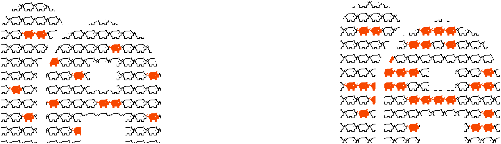
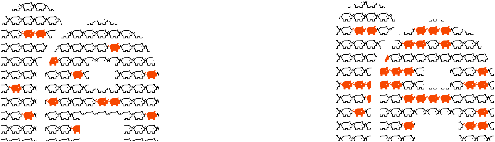
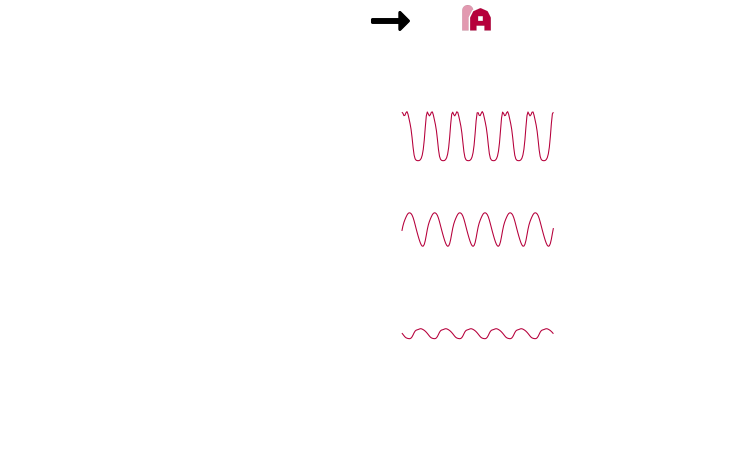
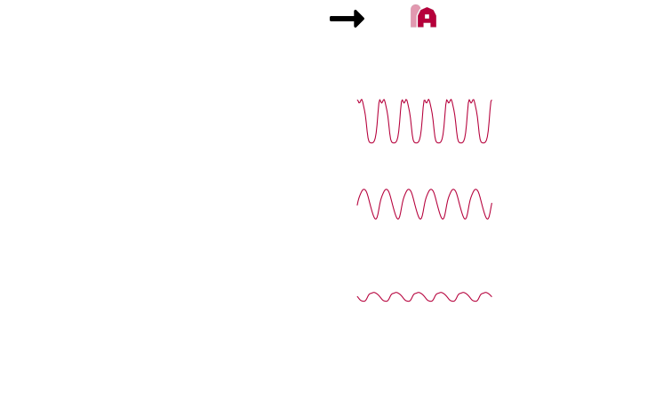
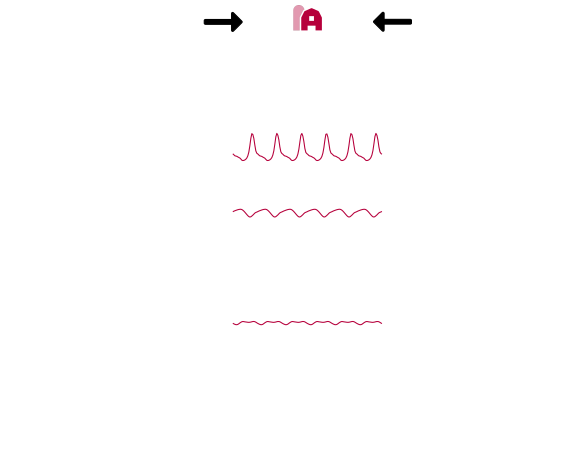

Matt Michalska-Smith
Kimberly L. VanderWaal, Cesar A. Corzo
Montserrat Torremorell, & Meggan E. Craft
- Background
- Model setup
- Small network results
- Implications for large networks
- Background
- Multi-strain disease
- Metapopulation networks
- Model setup
- Small network results
- Implications for large networks
- Influenza:
- Hemagglutinin
- Neuraminidase
H1N1
H5N1
$\color{f74700}{\beta}$
$1 - \color{f74700}{\beta}$ $\color{f74700}{\sigma}$
$\color{b6003b}{\beta}$
$\gamma \color{b6003b}{\beta}$
$1 - \color{f74700}{\beta}$ $\color{f74700}{\sigma}$
$\color{b6003b}{\beta}$
$\gamma \color{b6003b}{\beta}$
 

- Background
- Model setup
- One population
- Metapopulation networks
- Small network results
- Implications for large networks
What is a strain (mathematically)?
number of loci (N) and number of alleles (M)
$$\{x_1, x_2, \ldots, x_N\} \quad\quad x_n \in y_1, y_2, \ldots, y_M $$e.g. a disease with two loci ($a$ and $b$) and two alleles ($1$ and $2$) at each locus has four strains:
$$ \{a_1, b_1\}, \{a_1, b_2\}, \{a_2, b_1\}, \{a_2, b_2\} $$Hosts experience cross-reactive immunity when exposed to strains similar to those they have seen before,
i.e. strains $j \ni j \cap i \neq \text{Ø}$
Compartmental modeling
- those that are susceptible to strain $i$
- those that are currently infected with strain $i$
- those that have previously been infected with strain $i$
- those that have previously been infected with a similar strain $j$
$$
\begin{aligned}
\frac{\textrm{d} y_i}{\textrm{d}t} &= \color{f74700}{\beta} \left( (1 - w_i) + (1 - \color{005342}{\gamma}) (w_i - z_i) \right) y_i - \color{016394}{\sigma} y_i - \color{b6003b}{\mu} y_i\\
\frac{\textrm{d} z_i}{\textrm{d}t} &= \color{f74700}{\beta} (1 - z_i) y_i - \color{b6003b}{\mu} z_i\\
\frac{\textrm{d} w_i}{\textrm{d}t} &= \color{f74700}{\beta} (1 - w_i) \sum_{j \ni j \cap i \neq \text{Ø}} y_j - \color{b6003b}{\mu} w_i
\end{aligned}
$$
- $\color{f74700}{\beta}$: force of infection
- $\color{005342}{\gamma}$: degree of cross-reactive immunity
- $\color{016394}{\sigma}$: recovery rate
- $\color{b6003b}{\mu}$: death rate
Gupta, Ferguson, & Anderson 1998
Lourenço, Wikramaratna, & Gupta 2015
Lourenço, Wikramaratna, & Gupta 2015
Lourenço, Wikramaratna, & Gupta 2015


$$
\color{1b264f}{\mathbf{\Delta}} =
\begin{bmatrix}
-\delta & 0 & 0 & \delta & 0 & 0 & 0\\
0 & -\delta & 0 & 0 & 0 & \delta & 0\\
\delta & 0 & -3 \delta & \delta & \delta & 0 & 0\\
0 & 0 & 0 & 0 & 0 & 0 & 0\\
\delta & \delta & 0 & 0 & -2 \delta & 0 & 0\\
\delta & 0 & \delta & 0 & \delta & -4 \delta & \delta\\
0 & 0 & \delta & \delta & 0 & 0 & -2 \delta
\end{bmatrix}
$$
$$
\begin{aligned}
\frac{\textrm{d} y_{i,k}}{\textrm{d}t} &= \color{f74700}{\beta} \left( (1 - w_{i,k}) + (1 - \color{005342}{\gamma}) (w_{i,k} - z_{i,k}) \right) y_{i,k} - \color{016394}{\sigma} y_{i,k} - \color{b6003b}{\mu} y_{i,k} + \sum_l \color{1b264f}{\Delta_{kl}} y_{j,l}\\
\frac{\textrm{d} z_{i,k}}{\textrm{d}t} &= \color{f74700}{\beta} (1 - z_{i,k}) y_{i,k} - \color{b6003b}{\mu} z_{i,k} + \sum_l \color{1b264f}{\Delta_{kl}} z_{j,l}\\
\frac{\textrm{d} w_{i,k}}{\textrm{d}t} &= \color{f74700}{\beta} (1 - w_{i,k}) \sum_{j \ni j \cap i \neq \text{Ø}} y_{j,k} - \color{b6003b}{\mu} w_{i,k} + \sum_l \color{1b264f}{\Delta_{kl}} w_{j,l}
\end{aligned}
$$
- $\color{f74700}{\beta}$: force of infection
- $\color{005342}{\gamma}$: degree of cross-reactive immunity
- $\color{016394}{\sigma}$: recovery rate
- $\color{b6003b}{\mu}$: death rate
- $\color{1b264f}{\Delta}$: matrix of inter-population movements
- Background
- Model setup
- Small network results
- Migration dampens cycles
- Destinations inherit dynamics
- Dynamics inherit asymmetrically
- Implications for large networks
 


- Background
- Model setup
- Small network results
- Implications for large networks
- Effect of degree distribution
- Pinning down why
Result (from small networks)
Prediction (in large networks)
Migration dampens cycles:
Reduced cycle amplitude and disease prevalence in networks with longer chains
Destinations inherit dynamics:
Interconnected parts of the network should have similar dynamics
Dynamics inherit asymmetrically:
Preponderance of cyclical and chaotic dynamics

- Simple patterns emerge in small metapopulation networks
- When linked with migration, cyclical dynamics are dampened further down chains
- Migration tends to lead to inheritance of dynamical regimes between populations
- When multiple source populations are considered, more complicated dynamics (cycles and chaos) dominate the inheritance
- While there are patterns in larger networks, they are not simple
- More skewed degree distributions lead to higher prevalence, but not necessarily greater levels of immunity
- Further research is needed to:
- Generalize these small-network patterns to larger networks
- Identify relationships between more complex network structures and disease dynamics
- Fit to empirical data, including empirical network structures